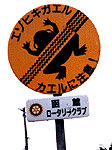
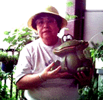
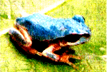
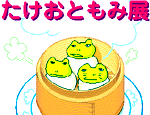
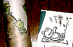

|
 函館にカエル横断注意標識が出現！【北海道函館発=桶名傾同志記者】函館へ旅行した際にとんでもない標識を見てしまいました。写真をご覧ください。函館山のふもとでは啓蟄どきにエゾヒキガエルが一斉に動き出し、道路を横断するため、轢れてしまうかえるたちが多く出るので注意を促すために市が設置した標識だそうです。 【全国かえる奉賛会】平成12年3月1日号で紹介した埼玉県入間市がカエル専用トンネル建設したニュースに続いて、函館でもカエル保護運動が盛り上がっているようだ。標識を見たらカエルの横断が終わるまで停車しよう！
謎のカエル抱き写真が到着！ 【千葉県市原発=本郷田鶴子同志記者】カエルの泣き声の上手な方 がんばろう【全国かえる奉賛会】本郷田鶴子同志記者から、『カエルの泣き声の上手な方 がんばろう』というメッセージとともに、カエルを横抱きにした素晴らしい写真が届いたので紹介しよう。大好きなカエルグッズとツーショットで写真に収まるとは、みんなも見習おうではないかあ。
そして、メールには画像だけがあり、メールの標題は、なかなか謎なメッセージだが、本郷田鶴子同志記者は、毎日、カエルの鳴き声を練習しているのであろうか！続報を待つ！
富山で２年ぶりにブルーカエル発見！ 【富山発=杉原秀圭・延喜式内杉原神社禰宜同志記者】平成１０年７月４日号のかえる新聞で、富山ブルーカエルを紹介していただきましたが、７月１１日の北日本新聞に、再び水色アマガエルの記事が掲載されていました。わずか２年で前回の水色アマガエルの記事のことを同じ新聞社が、すっかり忘れているようです。今回の発見者が「新種か？」と述べている部分は苦笑しました。 私見ですが、アマガエルは皮膚下層に３種類の色素（黒と黄色と青色だったはず）を持っており、色素細胞の大きさを自在に変化させることによって意中の色に体色を変化させることができます。アマガエル自身が自分の目で周囲を見て、自分の意志で変えられるようです。 水色カエルの場合、遺伝情報の変異により、黄色色素が欠落しているものと思われます。逆に青色色素が欠落すると黄色カエルになります。白カエルはアルビノのですから、全色素が欠落しています。今回および前回の発見では、共に緑色の葉の上にいるところを発見されていますので、本人（蛙）は緑色に変色しているつもりでいたはずです。
通算３カ所目の新発見！【全国かえる奉賛会】おおー新聞記者が変われば、そのつど『新種発見！』というニュースになるのが楽しいではないか。青色カエルの初出は、平成９年8月29日号での大分合同新聞の報道だと思うが、全国の一般紙の記者諸君は、カエルデータベースで調べて、記事の重複を無くすようにしようぜええ。でも、まーいいかー。毎回新鮮な気持ちで『ブルーカエル発見！』と報道し続けてくれー（爆笑） 銀座でカエルイラスト展！【東京発=タケオトモミ同志記者】「かえる」で検索をかけてここに来ました。私は今度、かえるのイラスト展をやります。場所は東京、銀座です．期間は７月２４日(月)から３０日(日)の１週間です。 ホームページでも紹介しています。わりとイラスト的なものが多いです。カエル好きな方に来ていただけると本当に嬉しいです。
【全国かえる奉賛会】銀座で個展とは、すごいではないかー。この原動力を来年の、東京銀座カエル展開催に向けて頑張って欲しいぞおおお
オンラインでカエルが買える！ 【京都発=GARA同志記者】オンラインでカエル和紙小物が買えるサイトのお知らせです。
和紙小物の製造・販売を手がける「鈴木松風堂」さんが、６月にオンラインショッピングサイト「京の路地裏職人」を開設され、そこで藤本美千子さんデザインのほっこりするカエル絵と、ぬくもりのある和紙の融合した、心暖まる商品が全国どこからでも買えるのです。藤本美千子さんとは、昨年京都で行われた「かえるの気持ちもよくわかる」展の作者さんで、詳しくは「かえるの学校」の「クラス便り７月号（99年）」をご覧いただければと思います。
吉祥寺カエルグッズ店の情報続々！【東京発=けろろん同志記者】平成12年7月10日号で紹介した、吉祥寺のカエルグッズ専門店『ｃａｖｅ』（〒180-0004武蔵野市吉祥寺本町2-26-1）に私よく行きます(^^;吉祥寺は自転車で30分ぐらいなんでメンバーズカードも持ってます（500円で1スタンプ）誕生月にはバースデーはがきが届き、５％割引の特典があります。海外リアルカエル好きの方におすすめの店です。
吉祥寺に新たなカエルスポットも！【東京発=PIKITA同志記者】あのお店が出来てからは私の財布は風通しが良くなるばかり。すげー店です。店内で取り扱っているのはカエル君とイギリスの雑貨・お香などです。カエル物はぬいぐるみ・ポストカード・ドアチャイム・キーホルダーなど「おもちゃ・飾り物」系が多いです。変わったところでは「水道の蛇口」。あのひねるところが座りカエルになります。 吉祥寺にはカエル専門店ではないもののバリのカエルがたっぷり並んでいる店「きんぎょや」もある。吉祥寺北口のハモニカ横丁内にあります。電話番号は0422-20-6050です。 お店の人が言うにはカエル好きの人がまだ持っていないものを見つけてくるのは大変だけど期待されてるので頑張るとか。翼の生えた「天使ガエル」、砂岩を彫った「音楽家カエル」「ピルケース」、「貯金箱」なんかが盛りだくさん。エスニックカエル好きにはたまらないスポットとなっております。
投稿採用者に武功カエル徽章を授与！ |
かえる古新聞過去に取り上げた記事を見出し付きで一覧したい人は、ここをクリック◆創刊号を見る◆先週号を見る◆話題の号を見る◆かえる新聞の昔を読む
|
私も入っています。。全国かえる奉賛会
大王様に会うには、このバナーをクリック。ずっと奥に写真館があるぞ。全国かえる奉賛会に入会するには、自分のホームページのどこかに、下の部分を追加するとバナーがリンク付きで表示されるぞ。どんどん入会しましょー |


|